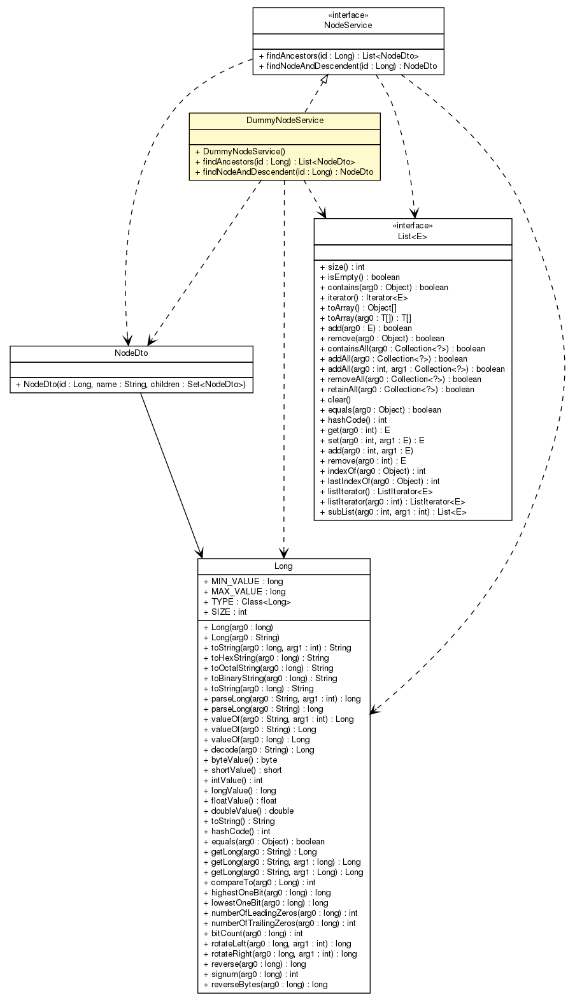

net.sereneproject.collector.service.impl
Class DummyNodeService

java.lang.Object
 net.sereneproject.collector.service.impl.DummyNodeService
net.sereneproject.collector.service.impl.DummyNodeService
- All Implemented Interfaces:
- NodeService
@Service
public class DummyNodeService
- extends Object
- implements NodeService
| Methods inherited from class java.lang.Object |
clone, equals, finalize, getClass, hashCode, notify, notifyAll, toString, wait, wait, wait |
DummyNodeService
public DummyNodeService()
findAncestors
public List<NodeDto> findAncestors(Long id)
- Specified by:
findAncestors in interface NodeService
findNodeAndDescendent
public NodeDto findNodeAndDescendent(Long id)
- Specified by:
findNodeAndDescendent in interface NodeService
Copyright © 2012 Serene Project. All Rights Reserved.